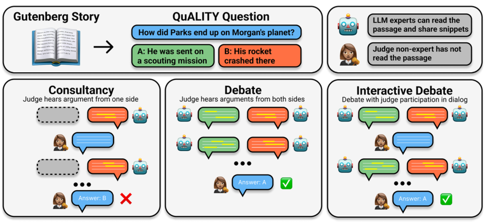

# CMSC 25750/35750: ## Large Language Models ## Lecture 9: Scalable Oversight <p style="text-align: center;"> Chenhao Tan<br/> University of Chicago<br/> @ChenhaoTan, @chenhaotan.bsky.social<br/> chenhao@uchicago.edu </p>
## Logistics - Project updates
## Today's agenda * Paper overviews * Deep dives * Discussion
## Today's agenda * Paper overviews * <span style="color: #767676;">Deep dives</span> * <span style="color: #767676;">Discussion</span>
## The scalable oversight problem RLHF and similar alignment methods depend on humans being able to evaluate model outputs reliably. As models improve, their outputs on many tasks will exceed what a non-expert can verify on their own. The question: can we design oversight protocols that remain accurate even when the model being supervised knows more than the person supervising it? Bowman et al. (2022) propose studying this with the "sandwiching" paradigm: pick tasks where a model outperforms non-experts but underperforms domain experts; measure whether non-experts using the model can approach expert-level accuracy. <p class="citation"><a href="https://arxiv.org/abs/2211.03540">Bowman et al., 2022</a></p>
## Debate as a scalable oversight protocol Irving et al. (2018) propose debate: two AI agents argue for opposing answers to a question; a human judge picks the winner. The key assumption: finding a flaw in an argument is easier than constructing a correct argument from scratch. If this holds, a weaker judge can detect lies in a debate even when they could not answer the question alone. Theoretical support: debate connects to interactive proof systems in complexity theory---under certain conditions, honest debate is the only Nash equilibrium. Both papers today test this empirically. <p class="citation"><a href="https://arxiv.org/abs/1805.00899">Irving et al., 2018</a></p>
## Debating with More Persuasive LLMs Leads to More Truthful Answers Khan et al. (2024) test debate on the QuALITY reading comprehension dataset under information asymmetry: debaters can see the underlying text, judges cannot. Main findings: - Debate consistently outperforms consultancy (a single expert arguing for one side) for both LLM and human judges - Optimizing debaters for persuasiveness---without ground-truth labels---improves judge accuracy in debate but degrades it in consultancy - Stronger consultants make consultancy worse; stronger debaters make debate better <p class="citation"><a href="https://arxiv.org/abs/2402.06782">Khan et al., 2024</a></p>
## On Scalable Oversight with Weak LLMs Judging Strong LLMs Kenton et al. (2024) extend debate evaluation beyond a single reading comprehension task to nine tasks spanning extractive QA, closed QA (MMLU, GSM8K, GPQA), logic, and multimodal reasoning. Main findings: - Debate beats consultancy across all tasks---the first demonstration outside QuALITY - Debate's advantage over direct QA depends on whether the task has information asymmetry; for closed tasks, the advantage is small or absent - In open-role protocols (where the model chooses its side), debate better protects against amplifying the model's own mistakes than consultancy does <p class="citation"><a href="https://arxiv.org/abs/2407.04622">Kenton et al., 2024</a></p>
## Today's agenda * <span style="color: #767676;">Paper overviews</span> * Deep dives * <span style="color: #767676;">Discussion</span>
## Experimental setup: Khan et al. <p></p> <p class="citation">Khan et al., 2024</p>
## Measuring debater quality without ground truth Standard evaluation of debate requires knowing the correct answer. Khan et al. introduce unsupervised metrics to evaluate debaters without labels---important for scaling to tasks where ground truth is unavailable. Win rate: how often the judge picks a given debater's answer. Aggregate Elo: a latent skill rating derived from cross-play win rates across many opponent pairings. These metrics allow debaters to be ranked and optimized purely based on judge approval, without ever consulting ground truth. The question is whether optimizing for persuasiveness in this way produces more truthful debaters. <p class="citation">Khan et al., 2024</p>
## Optimizing for persuasiveness at inference time Khan et al. generate a range of debater capability levels using two inference-time methods: Best-of-N (boN): sample N arguments independently; use a preference model to select the most persuasive one. The preference model has no access to the text, simulating optimization against the judge. Critique-and-refinement (cN): another model generates N critiques of a draft argument; the most helpful critique is used to refine the argument. These produce debaters of varying strengths without any training, allowing the effect of persuasiveness on judge accuracy to be measured across a wide range. <p class="citation">Khan et al., 2024</p>
## Debate outperforms consultancy With GPT-4-Turbo debaters and best-of-16 sampling: - LLM judges: debate 76% vs. consultancy 54% vs. naive baseline 48% - Human judges: debate 88% vs. consultancy 78% vs. naive baseline 60% The expert judge upper bound (the judge reads the full text) is ~92% for LLMs and ~89% for humans. Across all protocols, human judges outperform LLM judges, indicating that current LLMs are not yet adequate replacements for human overseers in this setting. <p class="citation">Khan et al., 2024</p>
## Truth has an advantage---and it grows with capability In cross-play tournaments, debaters assigned the correct answer consistently achieve higher Elo than debaters assigned the incorrect answer. This "correct answer advantage" is a central assumption of the debate proposal. Crucially: as debaters become more persuasive overall (higher aggregate Elo), the gap between their correct-Elo and incorrect-Elo widens. Stronger models are disproportionately better at arguing for the truth than for a lie. This result supports the scaling hypothesis: as models improve, debate may become more reliable, not less. <p class="citation">Khan et al., 2024</p>
## Stronger consultants make consultancy worse For consultancy, the opposite pattern holds: as consultants are optimized for persuasiveness, incorrect consultants become relatively more persuasive, and overall judge accuracy decreases. An interpretation: RLHF-trained models are already fairly good at arguing for correct answers; optimization gives more room to improve on incorrect answers by exploring deceptive strategies. Since the judge does not know which side the consultant is on, the degradation in incorrect-consultant accuracy pulls down overall performance. <p class="citation">Khan et al., 2024</p>
## Human judge results Khan et al. recruit 21 human judges through a referral-based platform, spending over a thousand hours of annotator time. Key findings for human judges: - Debate (88%) outperforms consultancy (78%) significantly (p = 0.001 for static, p = 0.048 for interactive) - Adding human interaction (interactive debate) does not improve accuracy over static debate---non-expert questions do not help when the limiting factor is debater quality - Human judges are better calibrated in debate: high-confidence answers in debate are reliable; rejecting low-confidence answers improves accuracy further <p class="citation">Khan et al., 2024</p>
## Kenton et al.: a broader evaluation Kenton et al. study nine tasks across three categories: Extractive QA (QuALITY, BoolQ, GPQA-extractive): the article is given to debaters but not the judge---information asymmetry is the source of the weak-strong gap. Closed QA (MMLU, GSM8K, PrOntoQA, TruthfulQA, GPQA): no article; the gap comes from model capability differences in knowledge and reasoning. Multimodal (MMMU): image + text questions, using Gemini Pro 1.5 as the only multimodal-capable model. Judge models: Gemma 7B, GPT-3.5, Gemini Pro 1.0, Gemini Pro 1.5. Debaters/consultants: Gemini Pro 1.5. <p class="citation">Kenton et al., 2024</p>
## Assigned-role results: what generalizes Debate consistently beats consultancy across all task types---this extends Khan et al.'s finding on QuALITY to closed and multimodal tasks. Debate vs. direct QA (no expert assistance) is more nuanced: - Extractive tasks: debate outperforms direct QA without the article; but direct QA with the article is still best---information is used most efficiently when given directly to the judge - Closed tasks: for the most practically relevant judge models (GPT-3.5, Pro 1.0), debate shows small or no advantage over direct QA - Weakest judge (Gemma 7B): debate does not help; the judge is too weak to benefit from debate transcripts - Strongest judge (Pro 1.5, same as debaters): debate hurts, since there is no weak-strong gap to bridge <p class="citation">Kenton et al., 2024</p>
## Scalable oversight does not happen magically In open consultancy, the model argues for whatever answer it would give directly. Result: the judge follows the consultant at roughly the same rate whether the consultant is correct or incorrect. A wrong consultant is nearly as convincing as a correct one. <p class="citation">Kenton et al., 2024</p>
## Open debate: the adversary as a check In open debate, the protagonist argues for their preferred answer; the antagonist takes the opposite side. When the protagonist is wrong, judge accuracy is substantially higher than in open consultancy. The adversary surfaces problems a single consultant would hide. <p class="citation">Kenton et al., 2024</p>
## What doesn't matter: ablation results Kenton et al. find that many settings have little effect on judge accuracy: - Number of turns (1 vs. 3): no significant difference - Best-of-N for debaters: increases Elo but does not translate to meaningfully higher judge accuracy---a mildly negative sign for debate as a training protocol - Few-shot prompting for judges: no significant improvement - Chain-of-thought for judges: tends to hurt performance or be neutral---weaker judges appear to override higher-quality debater reasoning with their own lower-quality reasoning - Sequential vs. simultaneous turns: no significant difference <p class="citation">Kenton et al., 2024</p>
## Elo scaling: a key disagreement between the papers Khan et al.: higher debater Elo reliably increases judge accuracy and the correct-answer advantage. Kenton et al.: this effect is specific to QuALITY. On tasks without information asymmetry, the picture is less encouraging. <p class="citation">Khan et al., 2024; Kenton et al., 2024</p>
## How the two papers connect Khan et al. is an optimistic proof-of-concept: on one carefully designed task, debate works, scales with persuasiveness, and works for both LLM and human judges. The information-asymmetric setup gives debate a natural advantage. Kenton et al. is a systematic stress test: by expanding to nine tasks, they identify where that advantage comes from---specifically, information asymmetry---and find that on closed tasks, debate's benefit over simply having the judge answer directly is small. Both papers agree on the relative ranking: debate > consultancy. But Kenton et al. raise the bar: for debate to be a convincing scalable oversight protocol, it needs to outperform direct QA, not just consultancy. <p class="citation">Khan et al., 2024; Kenton et al., 2024</p>
## Today's agenda * <span style="color: #767676;">Paper overviews</span> * <span style="color: #767676;">Deep dives</span> * Discussion
## Discussion 1: How artificial is the task setup? Both papers use reading comprehension tasks with a clear ground-truth answer and a human-readable article. The judge's job is to pick the right answer, not to evaluate open-ended reasoning. What would a more realistic setup look like? Does the task structure drive the results---and would debate still help in a different setting?
## Discussion 2: What is beyond debate? Debate requires an adversary and a judge who can follow the argument. Both assumptions break down in harder settings. What other approaches could extend human oversight, and how do they compare to debate?
# Questions?